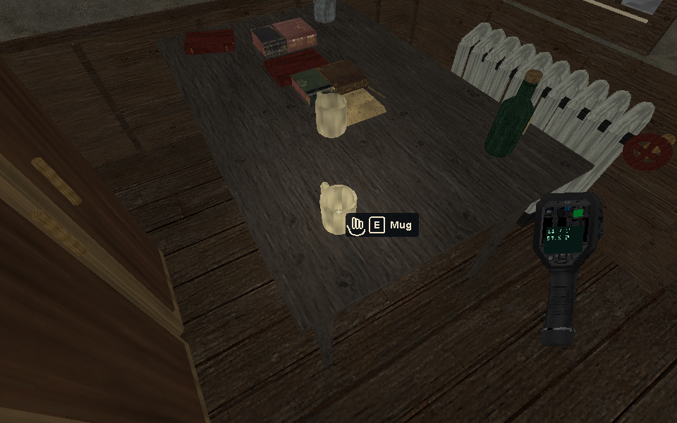
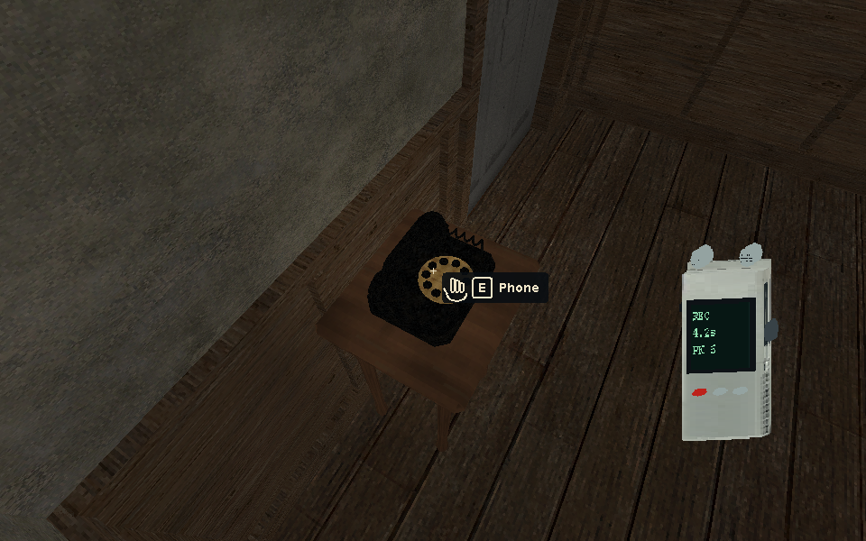
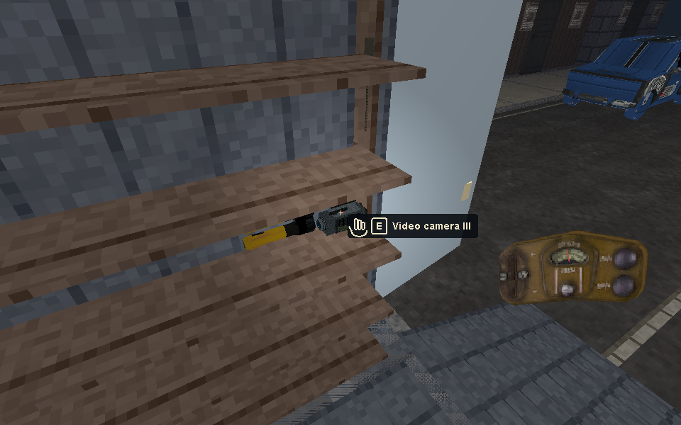
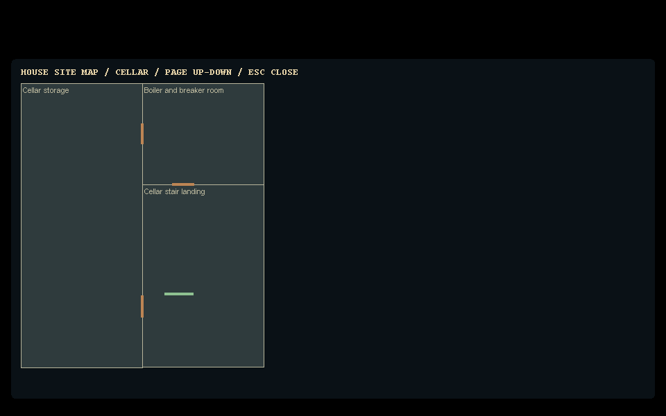
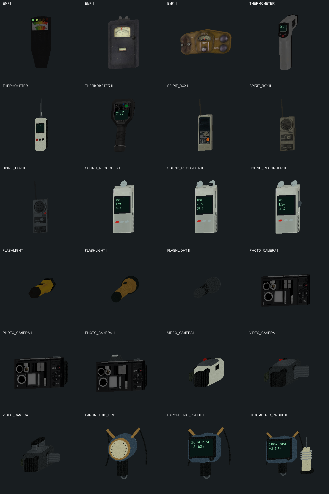

Actual 960×600 game renderer captures: the hand, E and name identify the visible object under the centre crosshair. The held instruments use the actual source meshes. Display values in these review captures are explicitly supplied verification samples; they are not evidence from a live investigation.
Runtime uses successful solo scan results and host measurements. EMF uses its LEDs/analog needles, thermometers their LCDs, recorders their REC/time/peak display, and authored digital tools their actual panels. Analog spirit radios retain audio responses and the case record. The floor plan supports Page Up/Down. Implementation and repeatable checks · Focused verification results.




